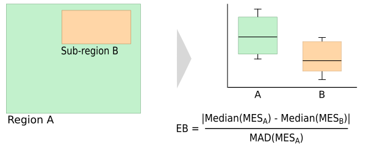

The measure is based on the Multivariate Environmental Similarity (MES) surface, which was proposed by Elith et al (2010). The MESS measures the similarity in a set of variables between any given location in an area and the locations in a reference area.
The first step to compute the MES for a location P is to calculate how similar conditions in P are compared to the conditions in the reference area N, based on variable Vi. The similarity is expressed as the deviation from Vi in P from the median of Vi in N. This is done for all variables of interest (V1, V2, ...Vj).
In the original equation proposed by Elith et al (2010) the final MES in location P is computed as the minimum of the similarity values (IESminimum) of the individual variables (Vj) in P. However, to compute the MEB using the mean or median may be a better choice as they take into account the similarity along all environmnetal axes and not only the one that deviates most. The user therefore has the option to use the mean (IESmean) or median (IESmedian) of the IES instead (there is still the option to use the minimum as well).
The MEB is computed as the absolute difference of the median of the MES in the whole target area (MESN) and the median of the MES in the subset (MESS), divided by the median absolute deviation (MAD) of the MES in N. It is also possible to compute the bias based on the individual variables (IEB) in which case the IES instead of the MES is used.

The addon creates a MES layer and a table (saved to csv file) with the median value of each variable in the region and in the reference area, the median absolute deviation (mad) and the environmental bias (eb). Optionally, this can be computed for the individual variables as well. The user has the option to have the addon compute the MEB based on the MES computed using the minimum, average and/or median of the IES layers (see above)
r.meb -m -n -o env=bio_1,bio_3,bio_9 ref=forestmap output=Test file=Test Median Test_MES_mean (all region) = 47.338 Median Test_MES_mean (ref. area) = 69.798 MAD Test_MES_mean (all region) = 14.594 EB = 1.539 Median Test_MES_median (all region) = 45.712 Median Test_MES_median (ref. area) = 69.897 MAD Test_MES_median (all region) = 18.786 EB = 1.287 Median Test_MES_minimum (all region) = 20.364 Median Test_MES_minimum (ref. area) = 55.807 MAD Test_MES_minimum (all region) = 15.096 EB = 2.348 The results are written to Test.csv